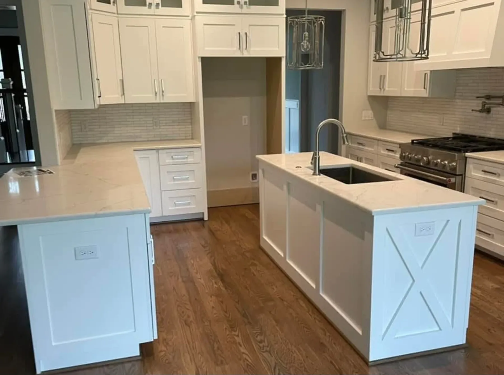

HomeProject gallery
PROJECT GALLERY
A look at
the work.
Cabinetry, built-ins, bathroom work and newly carved signs. Photographs from real projects, plus two short walkthroughs without sound.
COMPLETED WORK
Pick a room. Take a look.
Use the categories to see what fits your project. Videos are marked with a play symbol.
PLAN A PROJECT
See a detail
that clicks?
Send a reference photo, approximate dimensions and a description of the work. We can review the scope.
Project inquiry
PROJECT INQUIRIES
Looking for something new for your project?
A photo of your space and rough measurements are a good place to start.